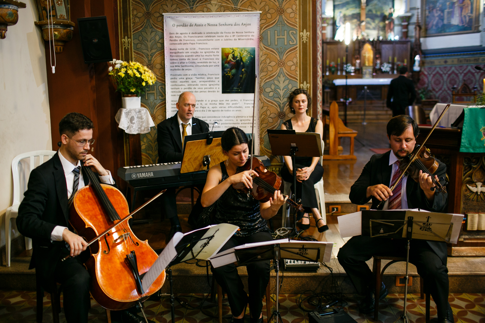
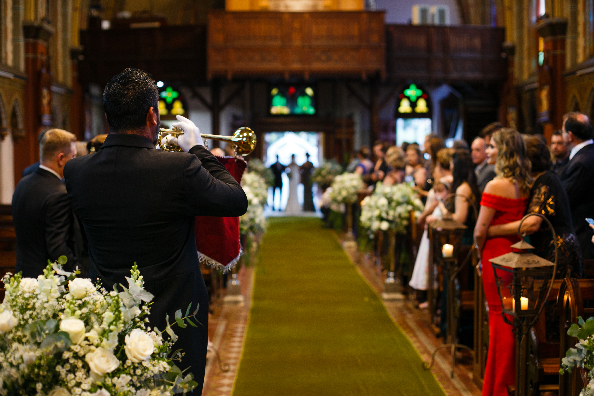

Trio de Cordas e Piano DigitalA entrada da noiva, anunciada pela clarinada, foi emocionante!
A combinação da Marcha Nupcial de Mendelssohn seguida da música All of Me (John Legend) arrancou lágrimas dos convidados e deu um ar delicado e romântico, exatamente o que a Natalia buscava para a sua entrada.

Clarim para entrada da noivaNatalia e João Victor - Casamento Católico
A seguir o repertório (as músicas em negrito são links para videos desta cerimônia no Canal do Quartilis no Youtube):
- Entrada de Padrinhos: I’ll be there for you (Tema Friends)
- Entrada do Noivo com os pais: Pra você guardei o amor – Nando Reis
- Entrada de dama: A bela e a fera
- Entrada da Noiva com os pais: Clarinada+ Marcha nupcial + All of me – John Legend
- Aclamação ao Evangelho: Aleluia a minh’alma abrirei – cantada
- Benção das alianças: Ave Maria – Gounod – cantada
- Comunhão: Como és lindo – cantada
- Assinatura/Cumprimentos: Oração pela família – cantada
- Saída Geral: Can’t take my eyes of you – F. Valli
Igreja Bom Jesus dos Perdões - Quartilis
(CREDITO DAS FOTOS: Adalberto Rodrigues)
Ficha Técnica:
Local da cerimônia: Igreja Bom Jesus dos Perdões (Praça Rui Barbosa – Curitiba)
Local da recepção: Bistrô Duchamp
Cerimonial: Lilian Prateado
Música da cerimônia: Quartilis – música para casamento em Curitiba
Fotografia: Adalberto Rodrigues
Filmagem: Olhares Films (Veja aqui o Highlights)
Decoração: Agapanthus
Mobiliario: Madera Eventos
Maquiagem: Glaucia Brito
Bolo/Doces: Peccato Doces Finos
Quartilis é um grupo especializado em música para casamentos e eventos em geral que atua em Curitiba desde 2002! Oferece diferentes combinações de instrumentos e consultoria exclusiva para escolha da formação musical e repertório da cerimônia.
Para mais dicas de repertório de cerimônias em igreja, clique aqui.